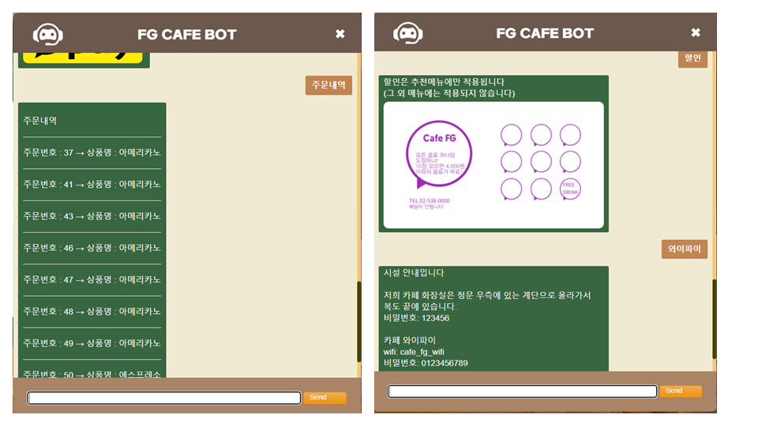
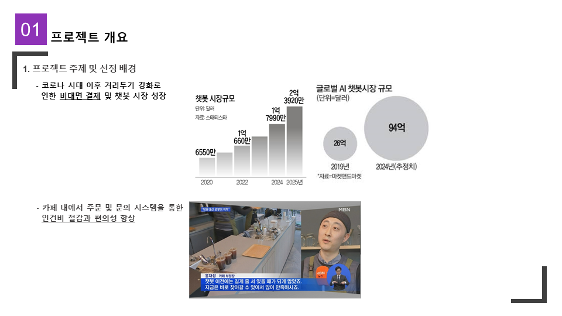
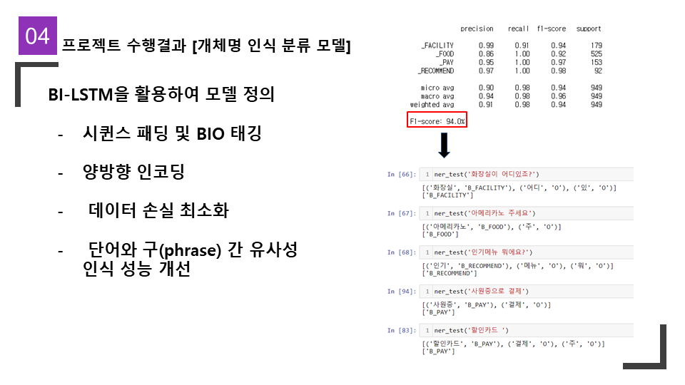

FG Cafe
챗봇을 활용한 비대면 카페 문의, 주문, 결제 서비스 웹사이트
Github후기
처음에는 이해 안되는 부분들도 많고 막히는 부분들도 많았습니다. 하지만 막히는 부분들을 디버깅을 통해서 뚫어 나가고 코딩 한줄 한줄을 집요하게 해부하면서 해결책을 모색했더니 자연스럽게 이해 안되던 부분들이 이해가 되기 시작했습니다. 특히 챗봇 엔진과 클라이언트 사이의 커넥션을 구현하는데 보람을 많이 느꼇습니다. Finite State Machine(FSM) 시스템을 저희 챗봇에 결합했기 때문에 엔진과 클라이언트 사이에 오가는 데이터가 저장도되면서 업데이트가 가능했어야합니다. 오랜 시간이 걸렸지만, 개발 과정에서 많은 것을 배우고 이해하게 되었습니다.



